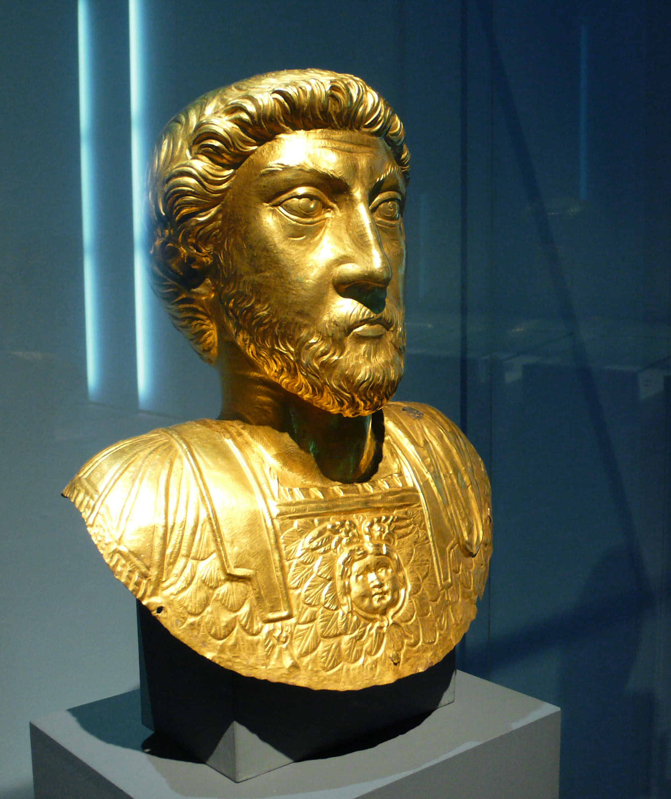

Home / Filosofi / Marco Aurelio

Marco Aurelio
Marco Aurelio · 121–180
«La felicità della tua vita dipende dalla qualità dei tuoi pensieri»
- Pensieri
- Natura
- Morte
- Dovere
💬La massima
«La felicità della tua vita dipende dalla qualità dei tuoi pensieri.»
— Marco Aurelio, Meditazioni, III, 9. In inglese, nella traduzione settecentesca di Jeremy Collier: «The happiness of your life depends upon the quality of your thoughts». L'idea torna in V, 16 con l'immagine gemella: «l'anima si tinge del colore dei suoi pensieri».
Spiegazione. Marco Aurelio non sta facendo ottimismo da quattro soldi: non dice «pensa positivo e andrà tutto bene». Dice una cosa più severa e più liberante: tra ciò che accade e ciò che provi c'è di mezzo un giudice, e quel giudice sei tu. La pioggia, l'insulto del collega, la coda in autostrada sono fatti; che diventino tragedie o dettagli dipende dal racconto che la tua mente ci costruisce sopra. Per questo aggiunge subito «custodisciti di conseguenza»: la mente è un perimetro da sorvegliare, come le frontiere dell'impero. Ogni giorno entrano pensieri abusivi — risentimenti, paure, vanità — e se li lasci accampare, ti governano loro. Il saggio stoico fa il lavoro della sentinella: esamina ogni pensiero al cancello e chiede «sei vero? sei mio? sei utile alla virtù?». Come il portinaio che non fa entrare chiunque nel palazzo, o il giardiniere che strappa le erbacce prima che soffochino le rose: la felicità non è un premio che arriva da fuori, è il raccolto di un terreno custodito.
Il punto sottile. Attenzione all'equivoco più comune: «qualità dei pensieri» non significa pensieri allegri, ma pensieri veri. Per Marco Aurelio un buon pensiero è un giudizio corretto sulla realtà, non una favola consolatoria: dire a te stesso «andrà tutto bene» quando i conti non tornano non è filosofia, è autoinganno. La qualità sta nel vedere le cose per ciò che sono — spogliare l'evento dalle etichette che la paura gli appiccica — e nel ricordare che hai sempre un margine: non puoi scegliere ciò che accade, ma puoi scegliere che cosa farne. Non è il mondo a doverti rendere felice; sei tu a dover rendere abitabile il mondo, un pensiero alla volta. Chi lo capisce smette di chiedere alla vita di cambiare canale e impara a regolare la propria antenna.
Perché conta oggi. Viviamo nell'epoca dei pensieri affittati: algoritmi che decidono cosa deve indignarci, titoli studiati per farci paura, confronti continui con vite che esistono solo sullo schermo. Il risultato è una mente rumorosa, piena di opinioni che non abbiamo scelto. Marco Aurelio propone la contromossa più antica e più moderna: riprenderti il cancello. La domanda da portare a casa non è «come faccio a cambiare tutto quello che mi stressa?», ma «quale pensiero, tra quelli che mi ronzano in testa, ho davvero verificato oggi?». Chi la pone, scopre che metà delle sue infelicità erano affitti non pagati a padroni sconosciuti — e comincia lo sfratto.
👤Biografia
Marco Aurelio nacque a Roma il 26 aprile 121, in una ricca famiglia di origine ispanica imparentata con l'imperatore Adriano. Rimasto presto orfano di padre, fu adottato dal nonno e crebbe tra precettori severi e discipline rigide: a dodici anni vestiva già il mantello del filosofo e dormiva per terra per temprarsi, finché la madre lo convinse almeno a usare le pelli. Adriano lo notò, lo fece fidanzare giovanissimo e alla fine lo destinò alla successione: nel 138 fu adottato da Antonino Pio insieme al piccolo Lucio Vero, e per ventitré anni imparò il mestiere di imperatore affiancando il padre adottivo senza mai farsi coinvolgere in intrighi.
L'imperatore filosofo in guerra. Salito al trono nel 161 insieme a Lucio Vero, regnò diciannove anni che furono tra i più duri di Roma: la guerra contro i Parti in Oriente, poi la terribile pestilenza portata in patria dalle legioni di ritorno (la cosiddetta peste antonina, che falcidiò milioni di persone), e infine le lunghe guerre contro Marcomanni e Quadi lungo il Danubio, dove Marco Aurelio passò anni negli accampamenti di Carnunto e Sirmio, dormendo in tenda come un soldato. In quegli anni — tra un'epidemia, un'invasione e la morte del fratello Vero nel 169 — scriveva di notte, in greco, i pensieri che noi chiamiamo Meditazioni: non un libro per il pubblico, ma un quaderno per sé stesso, per restare uomo mentre il mondo crollava.
Il carattere. I contemporanei lo descrissero come mite, scrupoloso fino all'eccesso, incapace di dormire per gli affari di Stato: lavorava fino a notte fonda, ascoltava tutti, perdonava i congiurati — al generale ribelle Avidio Cassio, che si proclamò imperatore nel 175, era pronto a concedere il perdono prima ancora che fosse ucciso dai suoi. Dietro la mitezza, però, c'era una malinconia profonda: perse quasi tutti i figli in tenera età, vide morire maestri e amici, e lasciò il trono — lui, il saggio — al figlio Commodo, che si rivelerà un tiranno sanguinario. Morì il 17 marzo 180 a Vindobona, l'odierna Vienna, probabilmente di peste, sul fronte del Danubio: l'imperatore filosofo spirò in una tenda militare, dopo aver raccomandato ai soldati, dicono, di «salutare il sole che sorge».
📌Sintesi del pensiero
Il cuore dello stoicismo di Marco Aurelio è semplice: non controlli gli eventi, controlli solo i tuoi giudizi sugli eventi, ed è lì che si gioca la felicità. La mente è una cittadella che nessun nemico esterno può espugnare se tu non apri le porte dall'interno; la natura ha dato a ciascuno una scintilla divina — la ragione — che permette di vedere ogni cosa nella sua verità e di agire per il bene comune. Vivere bene significa allineare i propri pensieri all'ordine del cosmo, accettare ciò che il destino porta e compiere il proprio dovere verso gli altri uomini, che sono parenti per ragione pur quando sono ingrati e ostili.
- Giudizio e cittadella interiore: gli eventi non feriscono, feriscono i giudizi; la mente sorvegliata resta libera anche in catene.
- Natura e accettazione: tutto ciò che accade è parte dell'ordine cosmico; desiderare altro è come volere che il fico non faccia fichi.
- Dovere e fraternità: gli uomini esistono gli uni per gli altri; sopporta l'ingrato, guidalo se puoi, amalo comunque.
🏛️I temi fondamentali
- La qualità dei pensieri: il cancello della mente. È il tema della massima: ogni emozione nasce da un assenso, cioè dal «sì» che diamo a un pensiero. L'offesa non sta nelle parole dell'altro ma nel nostro verdetto «mi ha danneggiato»; togli il verdetto e resta solo un suono. Marco Aurelio si allena a sospendere l'assenso: descrive ogni cosa «nuda», per ciò che è — la pietanza prelibata è solo un cadavere di pesce, il vino costoso solo succo d'uva fermentato — per non farsi ipnotizzare dalle etichette. Esempio concreto: il capo ti risponde con due righe secche e la mente urla «mi disprezza»; la sentinella interviene e chiede «che cosa è accaduto davvero? Due righe secche. Tutto il resto è mia aggiunta». In quel varco tra fatto e racconto sta tutta la libertà.
- La dicotomia del controllo: ciò che dipende da noi. Alcune cose dipendono da noi — giudizi, intenzioni, azioni — e altre no: salute, ricchezza, fama, persino l'esito delle nostre imprese. La fatica inutile nasce dal confondere i due territori: pretendere di comandare il vento e poi disperarsi perché soffia. Il saggio investe tutte le energie nel primo territorio e accetta il secondo come il marinaio accetta il mare: regola le vele, non le onde. Esempio concreto: prepari un colloquio con cura maniacale — questo dipende da te — ma la decisione finale no; se la leghi alla tua felicità, consegni a uno sconosciuto le chiavi della tua serenità. Preparati al massimo, poi lascia andare: hai fatto la tua parte, il resto non è tuo.
- La prospettiva cosmica: vedersi dall'alto. Quando un fastidio ti sembra enorme, Marco Aurelio consiglia il «colpo d'occhio dall'alto»: immaginare la terra vista dal cielo, con i suoi eserciti in marcia, i matrimoni, i processi, i funerali — un formicolio minuscolo nella distesa del tempo infinito. Non per disprezzare la vita, ma per ridare a ogni cosa la sua misura: quanta parte dei nostri tormenti sopravvive a questo sguardo? E insieme ricordare quanto è breve la vita — «tra poco sarai cenere» — per usarla bene, senza rimandare. Esempio concreto: litighi per un parcheggio e la rabbia monta; poi pensi che tra cent'anni nessuno saprà che quel posto esisteva, e la rabbia si sgonfia come un pallone bucato. Resta la cosa da fare — trovare un altro posto — senza più il veleno intorno.
- Il dovere verso gli uomini: la mano e i denti. «Siamo nati gli uni per gli altri, come i piedi, come le mani, come le palpebre, come i denti dell'arcata superiore e inferiore»: ostacolarsi è contro natura. Perciò ogni mattina Marco Aurelio si prepara all'incontro con l'ingrato, l'arrogante, l'invidioso — non per disprezzarli, ma per ricordarsi che agiscono così per ignoranza del bene e che sono comunque suoi parenti, partecipi della stessa ragione divina. La risposta all'offesa non è la vendetta ma la correzione gentile, e se non ascolta, la sopportazione serena. Esempio concreto: il vicino maleducato lascia di nuovo i rifiuti fuori posto; invece di covare rancore per una settimana, lo segnali con calma una volta e poi chiudi il pensiero: hai fatto il tuo dovere di cittadino, la sua maleducazione è un problema suo, non un affitto nella tua testa.
📚Le opere principali
- Meditazioni (in greco Ta eis heauton, «A sé stesso», 170–180 circa, pubblicate postume). Dodici libri di appunti personali scritti in greco durante le campagne sul Danubio — il primo tra i Quadi presso il fiume Granua, il secondo a Carnunto — mai destinati alla pubblicazione. Tesi centrale: l'esercizio quotidiano del giudizio retto, dell'accettazione del destino e del dovere fraterno come via alla serenità. Conta perché è il diario interiore più famoso della storia: un imperatore assoluto che ogni sera si rimprovera, si corregge, si esorta a essere migliore. Nessun trattato parla così da vicino a chiunque debba ricominciare ogni mattina.
- Epistolario con Frontone (lettere degli anni 139–166 circa, riscoperte nel 1815). La corrispondenza con Marco Cornelio Frontone, retore celebre e suo maestro di eloquenza latina, piena di affetto quasi filiale, di esercizi di stile e di notiziole quotidiane — raffreddori, letture, piccole gioie di famiglia. Tesi centrale: nessuna, è vita vissuta; ma mostra il retrobottega del filosofo, il giovane che si esercita a scrivere bene prima di imparare a pensare bene. Conta perché umanizza il monumento: prima di essere il saggio delle Meditazioni, Marco fu un ragazzo ansioso di piacere al maestro, e questo lo rende più vicino, non più piccolo.
💬Massime celebri
«L'anima si tinge del colore dei suoi pensieri.» — Meditazioni, V, 16. Conta perché è la formula gemella della massima del giorno: dice con un'immagine indelebile — la tintura che penetra la stoffa — che diventiamo ciò che frequentiamo con la mente. Da mandare a memoria come test quotidiano: di che colore mi sto tingendo oggi?
«Comincia la mattina dicendo a te stesso: incontrerò un ficcanaso, un ingrato, un arrogante, un imbroglione, un invidioso, un asociale.» — Meditazioni, II, 1. Conta perché rovescia la delusione in preparazione: chi prevede l'ingratitudine altrui non si avvelena quando arriva, e resta libero di rispondere con mitezza. È il vaccino stoico contro le aspettative tradite.
«Se non è giusto non farlo, se non è vero non dirlo.» — Meditazioni, XII, 17. Conta perché condensa l'intera etica stoica in due righe: la giustizia come regola delle azioni, la verità come regola delle parole. Un esame di coscienza tascabile, da usare ogni sera come faceva lui.
⌛Contesto storico
- Marco Aurelio nacque nel 121, nel pieno fulgore dell'impero: Roma contava circa un milione di abitanti ed era il centro di un mondo che andava dalla Britannia all'Egitto, unito da strade, legioni, diritto e commercio. Era l'età degli Antonini — Traiano, Adriano, Antonino Pio — considerata dagli storici il periodo più felice e meglio governato della storia romana: frontiere sicure, economia florida, città piene di biblioteche, terme e teatri. La società era rigidamente gerarchica — senatori, cavalieri, plebe, un esercito di schiavi — ma permeata dalla cultura greca: ogni giovane aristocratico studiava retorica e filosofia, e lo stoicismo era quasi la religione civile delle classi dirigenti.
- Il suo regno (161–180) coincise con la fine di quell'età dell'oro. Nel 162 scoppiò la guerra contro i Parti in Oriente; nel 165 le legioni vittoriose riportarono in patria un morbo devastante, la peste antonina, che per quasi vent'anni spopolò città e campagne, decimò l'esercito e svuotò le casse dello Stato. Dal 166 premettero sul Danubio le tribù germaniche di Marcomanni e Quadi, e Marco Aurelio passò gli ultimi quattordici anni della vita in guerra, tra accampamenti fangosi e marce forzate, mentre a Roma la peste e le tasse fiaccavano il popolo. In quello stesso mondo il cristianesimo, ancora minoranza perseguitata a ondate, cresceva nelle catacombe e nelle case: Marco Aurelio, uomo tollerante verso quasi tutti, non lo comprese e lasciò correre persecuzioni locali, come quella di Lione del 177.
- Da chi è stato influenzato dallo stoicismo di Epitteto — il liberto frigio i cui Discorsi, donatigli dal maestro Quinto Giunio Rustico, divennero il suo vangelo quotidiano; da Seneca e dalla tradizione stoica romana del dovere; dal retore Frontone per l'amore della parola esatta; dalla filosofia greca nel suo insieme — Eraclito e il divenire, Socrate e l'esame di coscienza, Platone e l'idea del re filosofo; e dall'esempio di Antonino Pio, che gli insegnò a governare con mitezza e scrupolo.
- A chi ha trasmesso ai neostoici del Rinascimento come Giusto Lipsio, che ne fecero un modello per principi cristiani; agli umanisti che riscoprirono il testo greco con la prima edizione a stampa del 1559; agli illuministi che amarono in lui il sovrano tollerante e razionale; a Pierre Hadot, che ne fece il simbolo della filosofia come esercizio spirituale; e allo stoicismo contemporaneo — da Irvine a Holiday — che lo cita come maestro di resilienza nelle scuole, nelle aziende e persino negli spogliatoi degli atleti.
🌊L'eredità
- Il primo erede di Marco Aurelio fu, paradossalmente, suo figlio Commodo: cresciuto all'ombra del padre saggio, ne rovesciò l'esempio e trascinò Roma verso la crisi, quasi a dimostrare per contrasto quanto rara fosse la virtù paterna. Ma la memoria del «buon imperatore» non morì: lo storico Cassio Dione, che lo conobbe, ne fece il ritratto dell'età dell'oro perduta, e per secoli gli imperatori successivi — da Settimio Severo a Giuliano l'Apostata — si richiamarono a lui come a un modello irraggiungibile, quasi un santo pagano della romanità.
- Con la riscoperta umanistica del testo greco, le Meditazioni divennero il libro da comodino dei potenti riflessivi: Federico II di Prussia le teneva sul campo di battaglia come Marco Aurelio sul Danubio, e Montesquieu vide in lui la prova che ragione e potere possono convivere. Nel Novecento Pierre Hadot ne fece il cuore della sua idea di filosofia come terapia dell'anima — non sistema astratto ma allenamento quotidiano — e da lì Marco Aurelio è arrivato fino a noi: citato nei manuali di management, nelle app di meditazione, nei discorsi degli allenatori. Duemila anni dopo, l'imperatore che scriveva per sé stesso in una tenda sul Danubio parla ancora a chiunque apra il quaderno la sera e si chieda: «oggi che uomo sono stato?».
🌍Esempi di oggi
- L'email velenosa del cliente. Arriva un messaggio pieno di maiuscole e punti esclamativi: «INACCETTABILE!». La prima reazione è rispondere a caldo, difendersi, contrattaccare. Poi interviene la sentinella: il fatto è una email di lamentele, tutto il resto — «mi odia, vuole rovinarmi» — è mia aggiunta. Respiri, rispondi ai fatti punto per punto con calma professionale, e chiudi il pensiero. La qualità dei tuoi pensieri ha deciso la qualità della tua giornata.
- La coda infinita alle poste. Quaranta minuti in piedi, il numeretto che non avanza, il vicino che sbuffa. Puoi trasformare l'attesa in tormento ripassando mentalmente tutto ciò che dovresti stare facendo, oppure in tempo tuo: osservi la gente, ripassi il discorso di domani, o semplicemente accetti — come il marinaio il mare — che oggi il vento soffia così. Stessa coda, due vite diverse: la differenza non è fuori, è dentro.
- Il figlio adolescente che sbatte la porta. «Non mi capisci, lasciami stare!» e la porta che trema. Il pensiero abusivo dice: ho fallito come genitore, non mi rispetta, sarà sempre così. La sentinella chiede: che cosa è accaduto davvero? Un ragazzo stanco e confuso ha sbattuto una porta. Resti parente per ragione — come dice Marco — aspetti che si calmi e torni a parlare con mitezza. Non hai cambiato lui in quel momento; hai custodito te stesso, e domani il dialogo sarà più facile.
📄Marco Aurelio (121–180), l'imperatore che governava il mondo e ogni sera esaminava la propria coscienza
Ritratto (busto di Marco Aurelio, fotografia in pubblico dominio, Wikimedia Commons):
🧠Quiz
Rispondi in chat con la lettera di ogni risposta, es. 1B 2A 3C 4D 5B. Oppure copia e rispondi così: «Quiz Marco Aurelio: 1B 2A 3C 4D 5B» (usa - per le risposte che salti).
1 Cosa significa «la felicità della tua vita dipende dalla qualità dei tuoi pensieri»?
2 Che cos'è la «dicotomia del controllo» nel briefing?
3 A cosa serve il «colpo d'occhio dall'alto»?
4 Come si comporta il saggio verso l'ingrato, secondo Marco Aurelio?
5 Quale episodio segna davvero la vita di Marco Aurelio?
✅Soluzioni — tocca per vedere
1B – 2B – 3C – 4C – 5B
🔁Ripasso
- Massima e sentinella: se sbagli la 1, ricorda il cancello della mente — il fatto è neutro, il giudizio decide; e che «qualità» significa verità e virtù, non allegria forzata.
- Controllo e prospettiva: se sbagli la 2 o la 3, ripeti i due territori — mio (giudizi, azioni) e non mio (fama, salute, esiti) — e l'immagine della terra vista dal cielo che rimpicciolisce ogni fastidio.
- Fraternità e vita: se sbagli la 4 o la 5, pensa alla mano e ai denti — nati gli uni per gli altri — e alle date-chiave: 121 la nascita, 161 l'impero, il Danubio e la peste, 180 Vindobona, e il figlio Commodo che rovina tutto.
🖼️In un colpo d’occhio
Tocca l’immagine per ingrandirla.